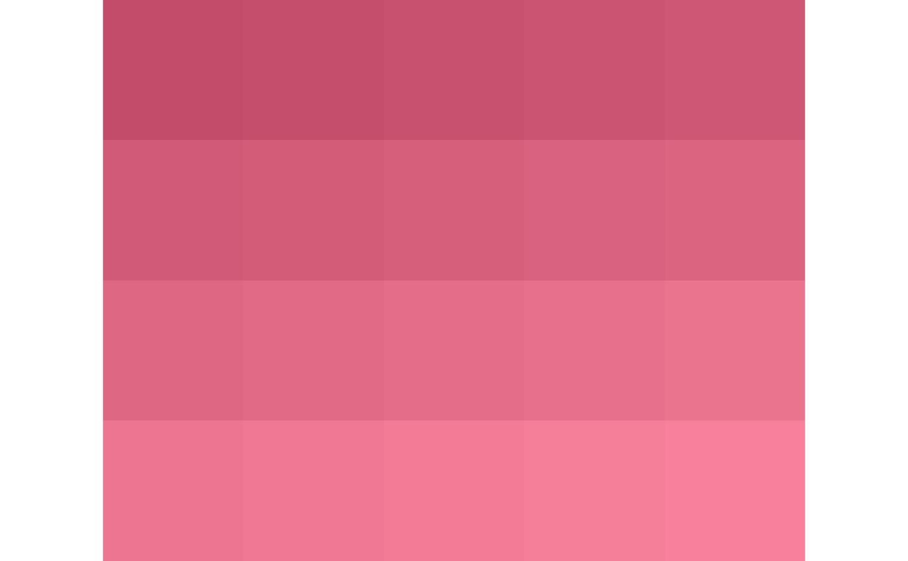
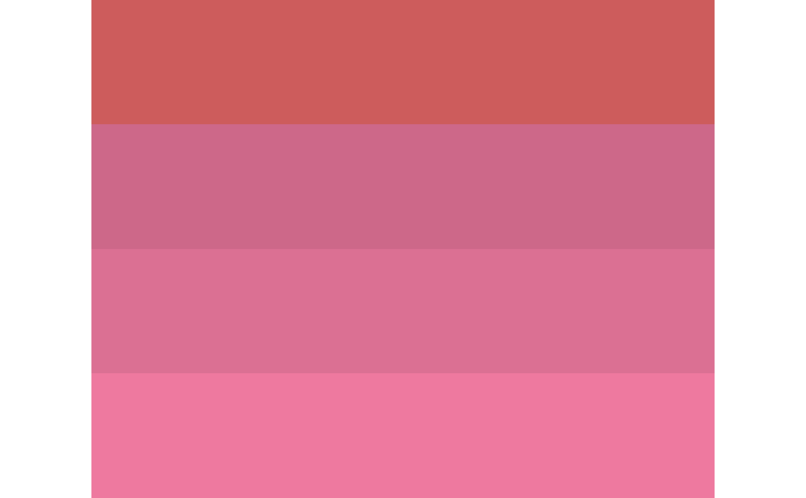

Return the built-in color names by the given hex code.
l_colorName(color, error = TRUE, precise = FALSE)
| color | A vector of 12 digit (tcl) or 6 (8 with transparency) digit color hex code, e.g. "#FFFF00000000", "#FF0000" |
|---|---|
| error | Suppose the input is not a valid color, if |
| precise | Logical; When |
A vector of built-in color names
Function colors returns the built-in color names
which R knows about. To convert a hex code to a real color name,
we first convert these built-in colours and the hex code to RGB (red/green/blue) values
(e.g., "black" --> [0, 0, 0]). Then, using this RGB vector value,
the closest (Euclidean distance) built-in colour is determined.
Matching is "precise" whenever the minimum distance is zero;
otherwise it is "approximate",
locating the nearest R colour.
#> [1] "red" "magenta" "blue"if(require(grid)) { # redGradient is a matrix of 20 different colors redGradient <- matrix(hcl(0, 80, seq(49, 68, 1)), nrow=4, ncol=5, byrow = TRUE) # a color plate grid::grid.newpage() grid::grid.raster(redGradient, interpolate = FALSE) # a "rough matching"; r <- l_colorName(redGradient) # the color name of each row is identical... r grid::grid.newpage() # very different from the first plate grid::grid.raster(r, interpolate = FALSE) # a "precise matching"; p <- l_colorName(redGradient, precise = TRUE) # no built-in color names can be precisely matched... p }#>#> [,1] [,2] [,3] [,4] [,5] #> [1,] "#C24C6A" "#C54E6D" "#C7516F" "#CA5472" "#CD5774" #> [2,] "#D05A77" "#D35C79" "#D65F7C" "#D8627F" "#DB6581" #> [3,] "#DE6884" "#E16A86" "#E46D89" "#E7708C" "#EA738E" #> [4,] "#ED7591" "#F07894" "#F37B96" "#F57E99" "#F8809C"